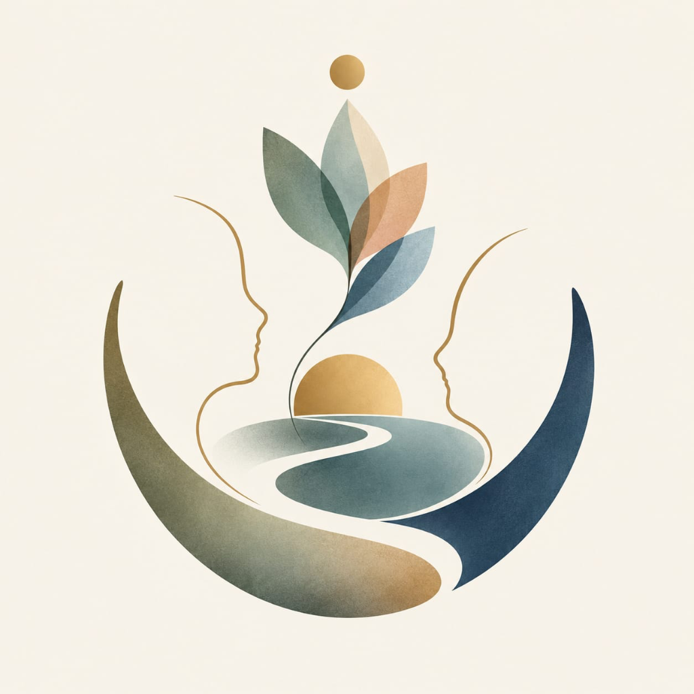
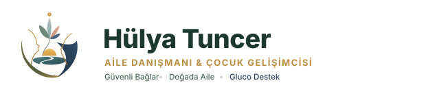
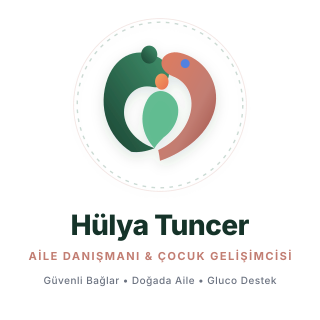
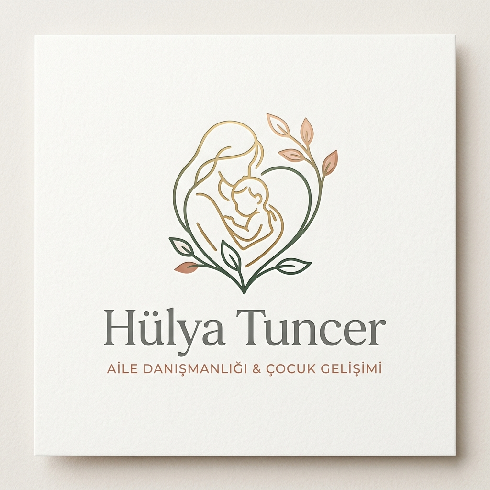
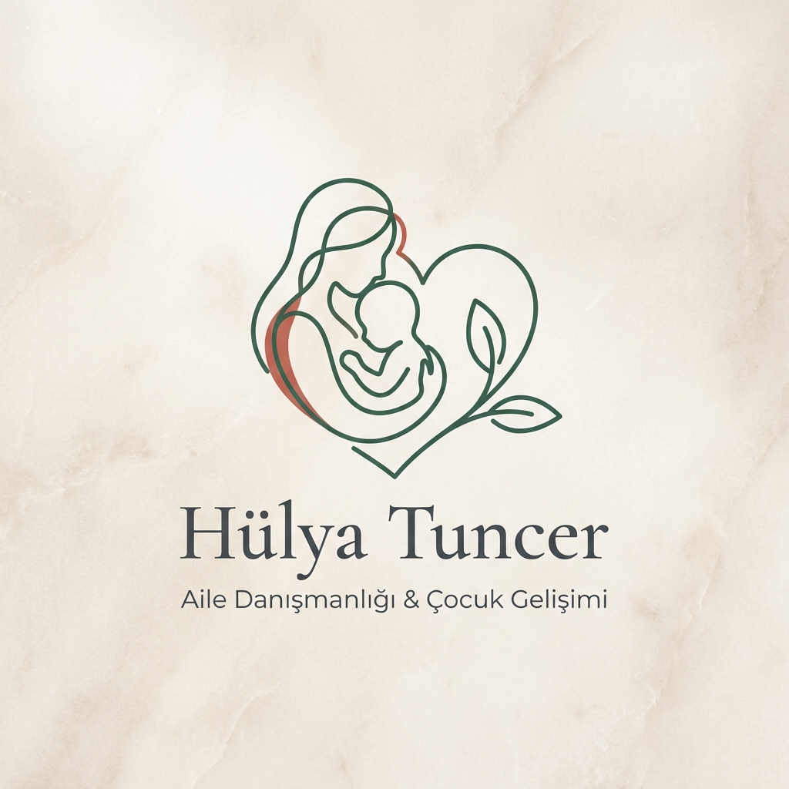

Göz Göze Empatik Bağ,
Hayat Yolu & Çiçek Açan Bilinç
Hülya Tuncer için kurgulanan bu özgün görsel kimlik; klişe şablonların ötesine geçerek çekirdek aileyi, iki kardeşin düğümlenen bağlarını, aynı evi ve hayatı paylaşan iki yol arkadaşını, insanın kendi iç dünyasıyla yüzleşmesini ve doğanın iyileştirici döngüsünü kucaklar.
1. Göz Göze Empatik Silüetler (Eşit & Kapsayıcı)
Hiyerarşisiz, karşılıklı iki insan profili; bazen iki kardeşi, bazen aynı çatıyı paylaşan iki dostu/ev arkadaşını, bazen eşleri simgeler. Aralarındaki mesafe, saygılı sınırları ve duyulma arzusunu temsil eder.
2. Akıp Giden Hayat Nehri
Merkezdeki 'S' kıvrımlı nehir yolu; danışmanlık sürecinin bir varış noktası değil, iyileşme ve farkındalık yolculuğu olduğunu anlatır.
3. Çok Katmanlı Hayat Filizi
Nehirden ve doğan güneşten göğe uzanan 5 yapraklı flora; çocuk gelişiminin farklı evrelerini ve Doğada Aile eko-terapi zeminini yansıtır.
4. Doğan Güneş & Altın Zihin
Ufuktaki altın güneş ve tepedeki taç küresi; karanlıktan aydınlığa çıkışı, umudu ve Glucoecosystem ile kazanılan psikolojik sağlamlığı temsil eder.

Hülya Tuncer Master Logo Sanat Eseri
Özgün, Felsefi & Kapsayıcı Kimlik


Marka Renk Paleti & Kodları
Doğallık, güven, empati ve sağlığı birleştiren dengeli tonlar.
HEX: #2D6A4F / #1B4332
Anlamı: Doğa, sakinlik, şifa, köklenme
Ana kurumsal renk
HEX: #C27D72 / #E07A5F
Anlamı: Şefkat, yuva sıcaklığı, empati
İkincil vurgu rengi
HEX: #F4A261 / #FDE68A
Anlamı: Çocukluk enerjisi, sevinç, ışık
Amblem tohumu ve canlılık
HEX: #2563EB / #3B82F6
Anlamı: T1D desteği, sağlık, güvenilirlik
Ekosistem ortaklık simgesi
Logo Format ve Varyasyonları
Her platform ve mecra için optimize edilmiş vektörel yerleşimler.
A) Yatay Kurumsal Logo (Horizontal Lockup)
Web sitesi üst menüsü, e-posta imzası ve antetli kağıtlar için ana logo.


B) Dikey / Kare Logo (Stacked)
Kitap kapakları, sunumlar ve sertifikalar.


C) Sosyal Medya & Favicon Amblemi (1:1)
Instagram avatarı, WhatsApp profili, mobil uygulama ikonu.

D) Koyu Tema Monokrom Logo (Dark Mode)
Koyu renkli broşürler, gece modu ve özel davetiyeler.


Ölçeklenebilirlik & Okunabilirlik
Evrensel bir logo 16 pikselden tabela boyutuna kadar kimliğini korumalıdır.
16x16 px
Tarayıcı Favicon'u
48x48 px
Mobil Menü / Bildirim
120x120 px
Instagram Profil Resmi
300+ px
Klinik Tabelası & Afiş
Lüks Doku & Mimari Zemin Üzerinde Marka Sunumu
Kartvizit, kurumsal dosya, antetli kağıt ve doğal taş dokusuyla stüdyo konseptleri.

Konsept A: Lüks Kağıt ve Altın Vurgulu Şefkat Formu

Konsept B: İskandinav Minimal Monoline & Taş Zemin
Tüm Logo Varlıklarını Vektörel Olarak Edinin
Tüm logolar SVG (Scalable Vector Graphics) formatında olup matbaa baskısında, web geliştirmede, dijital baskıda ve sosyal medyada pikselleşme olmadan sonsuz çözünürlükte kullanılabilir.